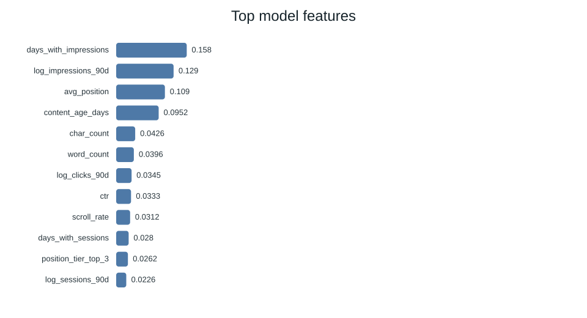
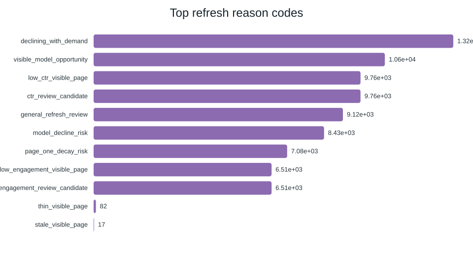
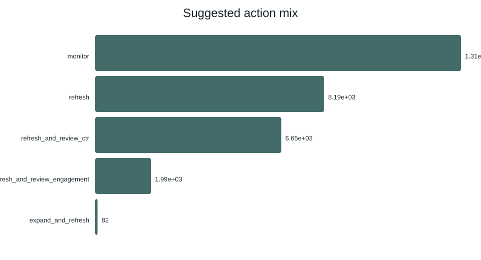
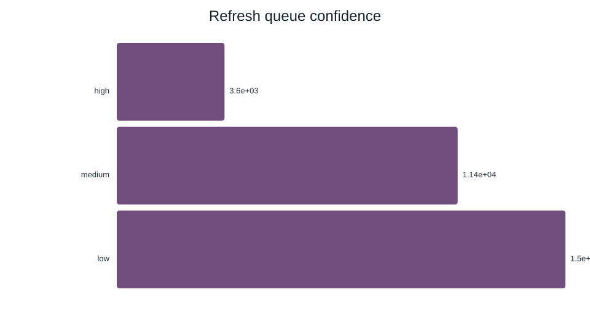
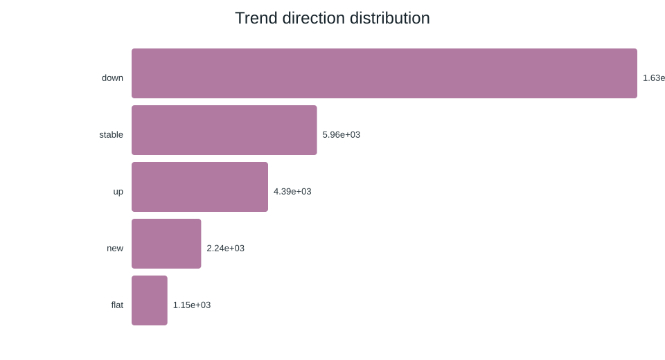

Machine Learning Capstone · Refresh / Content Opportunity Scoring
Prioritizing Content for Search-Performance Review
Research question: Can observed search-performance and content signals prioritize pages for human refresh review?
Abstract
We investigate whether observed search-performance and content signals can prioritize pages for refresh review. Using the bundled 30,000-row anonymized FlyRank content-refresh dataset, we prepare page-level features while excluding identifiers and label-derived trend fields from the model. We compare a transparent baseline with Logistic Regression, Decision Tree, and Random Forest using a client-holdout evaluation design. Random Forest is the selected model by Precision@50, reaching 0.740 versus 0.240 for the baseline, with ROC-AUC 0.750 and average precision 0.618 on the held-out split. The resulting ranked queue is a decision-support aid for human content review rather than evidence about Google’s causal ranking algorithm.
1. Introduction / Problem statement
The decision is which pages a reviewer should inspect first when editorial capacity is limited. The system outputs an opportunity score, rank, reason codes, and suggested action. It is designed for prioritization, not automatic publishing or pruning.
2. Data
The bundled anonymized dataset contains 30,000 rows and 44 columns before preparation. It contains page-level search, content, and engagement signals. No client names, domains, URLs, titles, keywords, credentials, or private queries are used. Pseudonymous client_id is used only for grouped validation. Rows with no 90-day impressions and pages younger than 90 days are excluded, then content IDs are de-duplicated.
The target is the observed proxy trend_direction == "down". This is a current-window decline proxy, not a future forecast.
3. Methodology
Features include search demand/competition, content length/type, 90-day impressions/clicks/sessions, availability days, age/freshness, CTR, average position, engagement, scroll behavior, AI-traffic share, and categorical tiers. trend_direction, trend_pct, content_id, and client_id are excluded from the feature matrix.
The baseline combines visibility, freshness risk, position opportunity, and content-depth gap. Logistic Regression, Decision Tree, and Random Forest are compared. The selection metric is Precision@50 because the operational goal is top-of-queue prioritization. Validation uses a client-holdout split.
4. Results
| Model | ROC-AUC | Avg Precision | Precision@50 |
|---|---|---|---|
| Baseline rules | 0.627 | 0.468 | 0.240 |
| Logistic Regression | 0.700 | 0.522 | 0.400 |
| Decision Tree | 0.742 | 0.575 | 0.580 |
| Random Forest | 0.750 | 0.618 | 0.740 |
The positive-label rate is 54.2%. The Random Forest concentrates positive proxy cases much more strongly in the top 50 than the baseline.
5. Results charts





6. Limitations & honest framing
- The label is an observed current-window decline proxy, not a clean future-window forecast.
- Results are directional and specific to this dataset and validation design.
- Feature importance is associative and does not establish causal ranking factors.
- A high score is a review priority, not an automatic editorial decision.
- The analysis does not prove Google ranking factors or causal refresh impact.
7. Ranked recommendations
The final queue ranks pages for review and attaches reason codes. Suggested actions include refresh, refresh_and_review_ctr, refresh_and_review_engagement, expand_and_refresh, and monitor.
- Start with high-confidence candidates.
- Read the reason codes before acting.
- Verify the page manually using editorial context.
- Choose the action only after human review.
8. Reproducibility
GitHub repository · Capstone notebook · Full report
The pipeline is implemented in scripts/01_prepare_features.py through scripts/04_evaluate_and_export.py.
9. Acknowledgments & data credit
Built on the FlyRank ML Internship dataset. Data source: FlyRank.